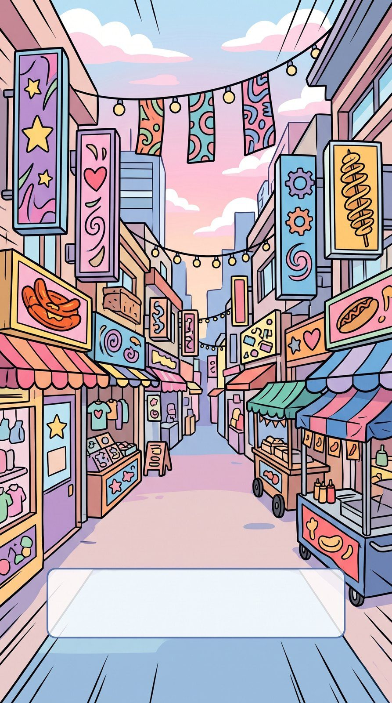
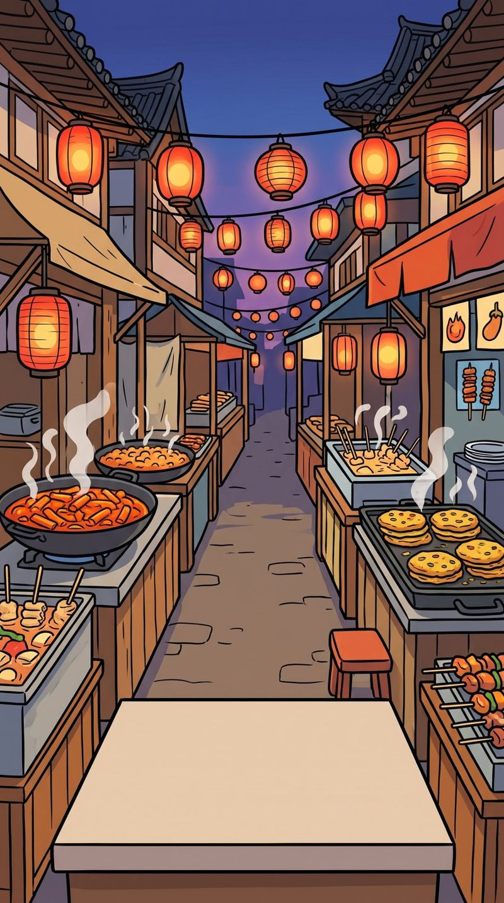
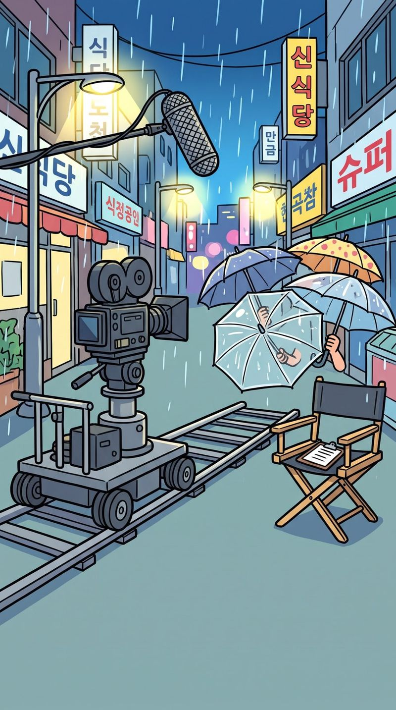
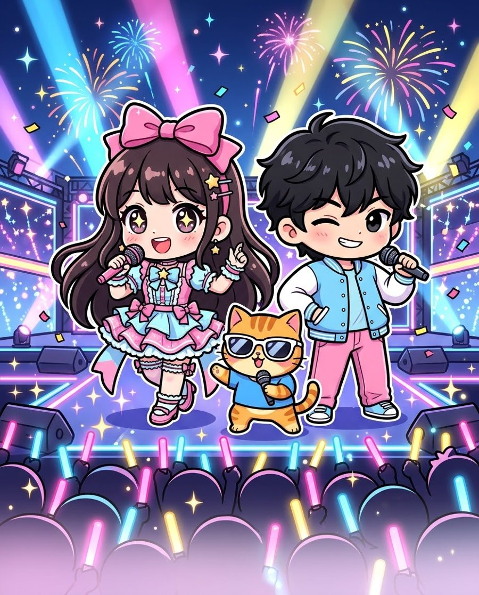

単語・瞬発力
スピードクイズ
60秒で何問とけるか。コンボでスコアが伸びる
にゃんグル （Nyangul）
iPhone · iPad ・ 日本語／English
ハングルの口の形から、文法・敬語・最新の若者言葉まで。ゲーム、ストーリー、教本、トレカ集め、着せ替え、推し写真。「もう1回やりたい」が続いて、気づけば韓国語が読める・聞ける・書ける・話せる。推しがいる人も、韓国ドラマ好きも、遊びながら学べる韓国語学習ゲームです。

Why Nyangul
単語を覚えるだけ、問題を解くだけでは続きません。にゃんグルは「勉強」を「遊び」と「推し活」の中に溶かしこみました。
| よくある学習アプリ | にゃんグル | |
|---|---|---|
| 続ける理由 | 連続記録だけ | ストーリー・トレカ・着せ替え・推しの好感度・毎日のミッション |
| 学び方 | 単語カードと選択問題 | コース＋教本で体系的に、8種のゲームで反復、ドラマのセリフで実践 |
| 書く | ほぼ対応なし | 指・Apple Pencil の手書き判定、書き取りラッシュ |
| 打つ | 日本語キーボードのまま | 韓国の若い人と同じ並びのキーボードで、タイピングとメッセージ返信 |
| 話す・聞く | 音声を聞くだけ | 声で答えて発音を採点（ヨントン発音診断）、キャラの声で読み上げ |
| 実力の確認 | 正答率だけ | TOPIK形式のミニ模試で、級の目安と分野別の正答率 |
| 自分らしさ | — | 推しの写真をアイコン・壁紙・ホーム・クリア画面に |
| 料金 | 月額のサブスクが多い | 無料で始めて、気に入ったら買い切り（定期購入なし） |

Course
ハングルの読み方から始まって、初級・初中級・中級・上級の5段階。ステージは10問前後で、6割正解で合格、8割でハイレベル、全問正解でパーフェクト。まちがえた問題はその場で聞き直せて、苦手な単語は自動で復習に出てきます。


Story mode
主人公はユナ・テヒョン・ネコのニャンから選べて、名前と誕生日も自由に。スカウト、練習生の初日、屋台で腹ごしらえ、チムジルバンで作戦会議、ドラマ OST の撮影、はじめてのファンミーティング…。全8章の物語の中で、章ごとに韓国語の課題をクリアしていきます。





Textbook
ゲームだけでは身につきにくい「しくみ」は、教本でしっかり。ㅡ と ㅜ の口の形のちがいのような超入門から、助詞・活用・変則・敬語、TOPIK 3〜6級の重要文法、書き言葉と作文の書き方、パンマル（ため口）、略語・新語・推し活用語まで。例文はすべて読み上げ（ゆっくり再生つき）、各課の最後にミニクイズ。
第2課・超入門
ㅜ は唇を丸く突き出す「ウ」。ㅡ は唇を横に引いたまま（「イ」の口のまま）出す「ウ」です。
Mini games
ゲームごとに鍛えられる力がちがいます。どれもレベル1〜5とエンドレスの6段階で、★を集めると次のレベルと衣装が開きます。スコアは Game Center のランキングで、世界中のプレイヤーと競えます。
単語・瞬発力
60秒で何問とけるか。コンボでスコアが伸びる

単語・記憶
韓国語と日本語のカードをペアに

文字のしくみ
子音と母音を組み立てて文字をつくる

リスニング
聞こえた言葉の風船をタップ

書く
指や Apple Pencil で早書き勝負

打つ
落ちてくる言葉を下に着く前に打ち返す

フレーズ・聞く
名セリフの（ ）に入る言葉を当てる

数え方・聞く
注文を聞いて、料理と数をそろえて出す
さらに、キャラごとの「キャラワールド」（21のワールド）で、プチゲームを次々にクリアするモードも。ゲームのレベル1〜3は無料で遊べます。
Trading cards
ゲーム・ミッション・ログインでコインをためて、トレカガチャへ。カプセルがゆれて、虹色の光が出たら SR 以上が確定！カードは1枚ずつめくって開けます。コインはゲームで集めるもので、お金では買えません。


Wardrobe
ユナ・テヒョン・ニャンに12着ずつ。ゲームの★、キャラワールドの制覇、毎日の目標達成のスタンプで、新しい衣装が届きます。選んだ衣装は、コースやゲームの中のキャラにも反映されます。


Your oshi
自分で撮った・手に入れた推しの写真を、アプリのあちこちに。指でずらして位置を、ピンチで大きさを決めてから保存できます。写真は端末の中だけに保存され、外部に送られることはありません。
トーク・ヨントン・ホームに出る、推しの顔アイコン。
コース画面いちばん上の絵を、最大5枚の写真で日替わりに。
コースやトークの背景に。文字が読みやすい暗さも調整できます。
ステージやゲームをクリアしたら、最大10枚の写真からランダムでごほうび。

Talk & video call
推しとのトークは、選んで答えるか、声で答えるか。ヨントン（ビデオ通話）発音診断では、推しに伝わる発音かを20フレーズで採点します。話すほど好感度が上がり、100%になると特別な演出とメッセージが。
Write · Type · Listen · Speak
「読めるけど書けない」「聞けるけど話せない」をなくすために、5つの力をそれぞれの練習で。
指で書いたハングルを判定。iPad なら Apple Pencil で、ノートに書くように本格的な書き取りを。
韓国の若い人と同じ並びのキーボードで練習。iPhone の韓国語キーボードにも切り替えられます。
推しから届いたメッセージに、韓国語で返事を打つ。実際のやりとりでそのまま使える30問。
聞いて意味を選ぶ・聞こえた通りに書く。10問1セットで、ゆっくり再生もできます。
場面ごとの会話に、3択で答えるか、自分で話して・書いて答えるか。ヒントつき。
全単語を検索できる辞書と、カテゴリ・場面ごとの10問セット。苦手な単語だけの表示も。
Exam mode
ヒントも日本語訳もなし。時間制限つきで、リスニングは1問2回まで。TOPIK I・IIあわせて160問の問題バンクから、1回25問を毎回ちがう組み合わせで出すミニ模試と、語彙・文法・リスニングの検定で、今の実力を確かめられます。終わったら級の目安と分野別の正答率、まちがえた問題の解説まで。
※TOPIK形式の問題・級の目安は本アプリのオリジナルで、実際の試験とは関係ありません。1回の問題数は本番より少ない「ミニ模試」です。読み上げ・リスニングはiPhoneの読み上げ音声です。

Every day
毎日変わる3つのミッション。全部クリアでボーナスコイン。
自分で決めた目標XPを達成するとスタンプとコイン。目標が高いほどごほうびも大きく。
キャラの誕生日にはお祝いの演出と、その日だけの誕生日カード。主人公の誕生日は好きな日に設定できます。
Characters
DJ のハムスター、ハモる三つ子のイチゴ、ドラマの名監督のカエル、財閥3世の室長まで。キャラ図鑑では、それぞれのプロフィールと口ぐせ（読み上げつき）が見られます。


※登場するアイドル・キャラクターはすべて架空です。
Price
入門〜初中級のコース、ストーリー全8章、ミニゲームのレベル1〜3、辞書、教本の第1・2課などは無料で遊べます（無料版は広告あり）。プレミアムは1回払いの買い切りで、定期購入ではありません。同じ Apple アカウントなら、機種変更しても「購入を復元」でそのまま。
2,000円1,400円 買い切り（30%OFF）
FAQ
大丈夫です。入門コースと教本の超入門は、ハングルの文字のしくみと口の形から始まります。
はい。iPhone と iPad の両方に対応しています。iCloud で記録が同期されるので、外では iPhone、家では iPad で続きから遊べます。iPad では Apple Pencil での書き取りもできます。
はい。アプリの設定で表示を英語にすると、教本も含めて英語で学べます。
いいえ。トレカのコインはゲームやミッションで集めるもので、お金では買えません。課金はプレミアムの買い切り1回だけです。
ほかのご質問は サポートページ へ。